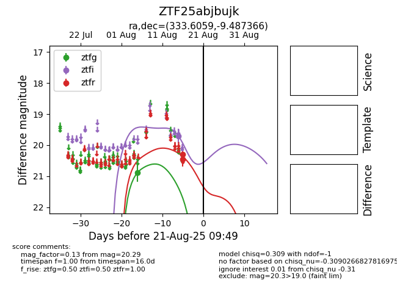

Target ZTF25abjbujk at 2025-08-21 09:49, see:
FINK: fink-portal.org/ZTF25abjbujk
Lasair: lasair-ztf.lsst.ac.uk/objects/ZTF25abjbujk
ALeRCE: alerce.online/object/ZTF25abjbujk
alt names
ZTF25abjbujk (ztf,alerce)
coordinates:
equatorial (ra, dec) = (333.6059,-9.48737)
galactic (l, b) = (50.8309,-49.01648)
photometry
last ztfg=20.88, ztfi=19.70, ztfr=20.29
1 ztfg, 1 ztfi, 2 ztfr detections
